Full paint corrections, ceramic coatings, and interior deep cleans — the swirl marks come off, the true color comes back.
Swirl marks, scratches, and oxidation cut back with multi-stage polishing so the paint's true depth and color show through again.
A hard, glossy layer applied over corrected paint to lock in the finish and make it easier to keep clean between visits.
Seats, carpets, trim, and every panel gap cleaned and conditioned — from daily drivers to weekend builds.
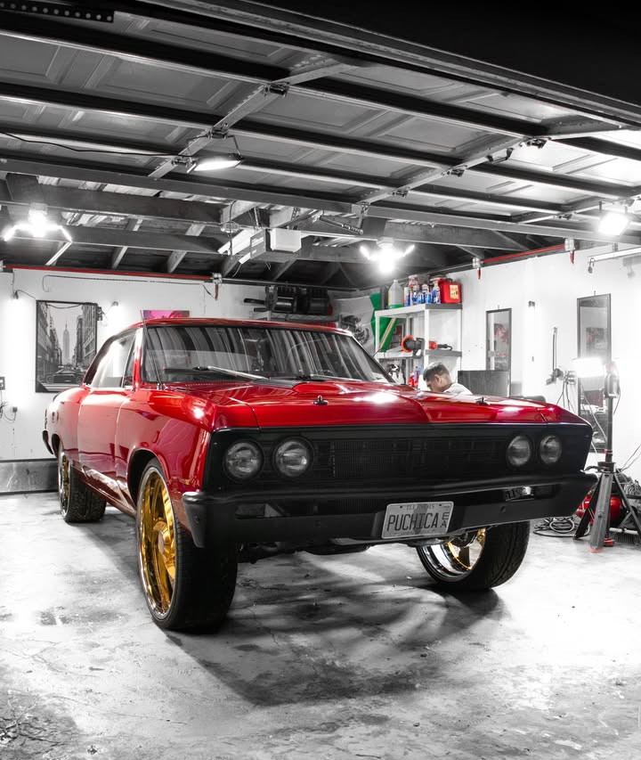
Full correction on candy red paint, finished with a wheel-off detail on the gold billets.
Matte-finish correction and coating that holds up under garage lighting and daily driving.
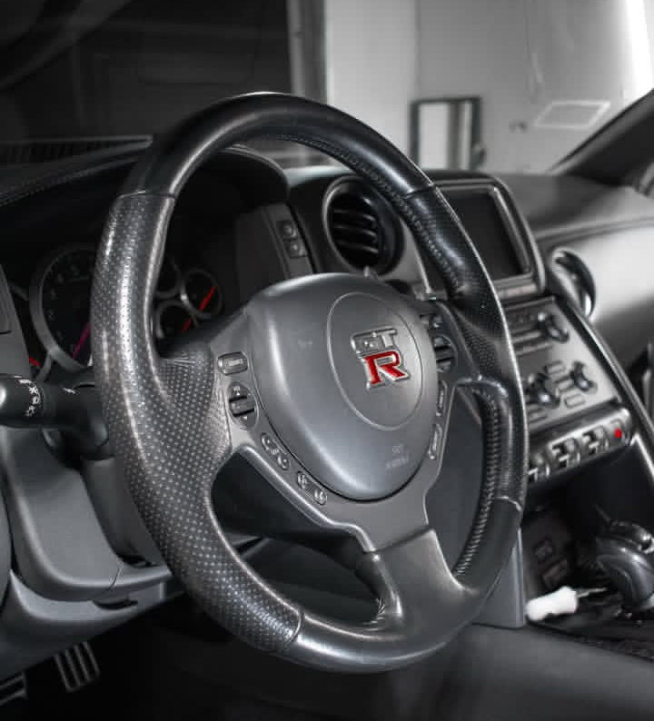
Steering wheel and center stack detailed and dressed.
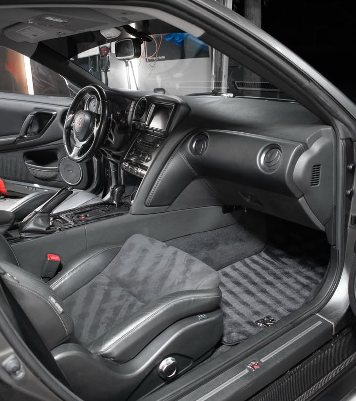
Full interior detail — every panel, vent, and stitch cleaned and conditioned.
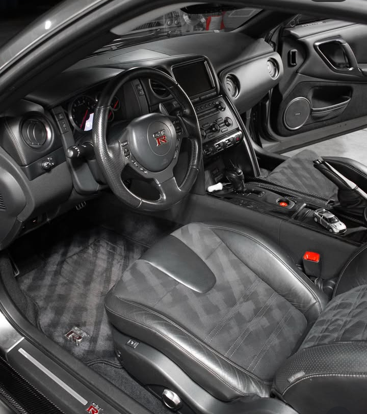
Cabin detail, inch by inch — wheel, stitching, and trim brought back to new.
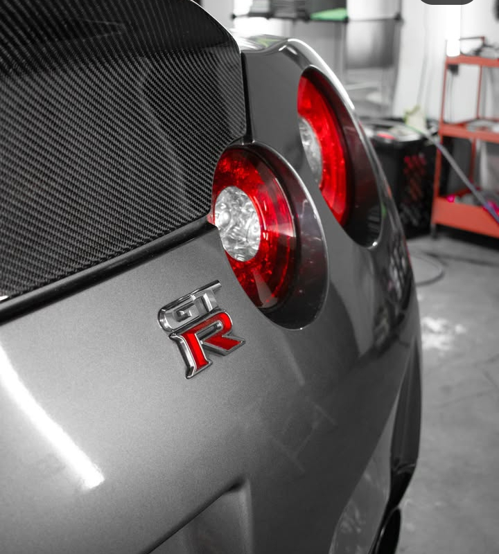
Carbon trim and taillight polished to a mirror finish after correction.
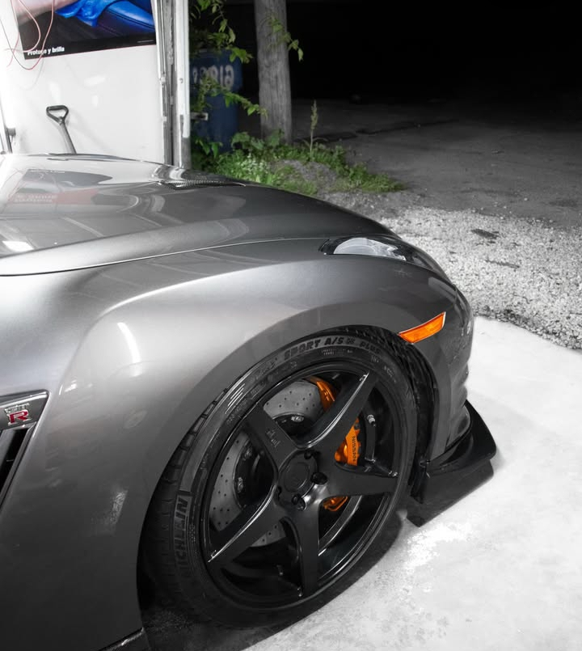
Wheels off, calipers dressed — every millimeter of the barrel cleaned before it goes back on.
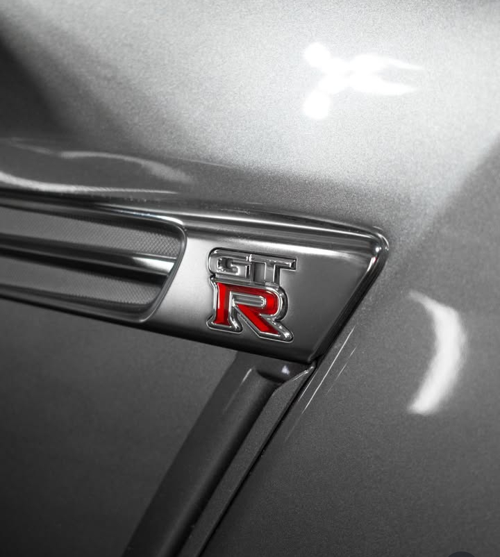
Badge and body line detail — the small stuff is where a correction really shows.
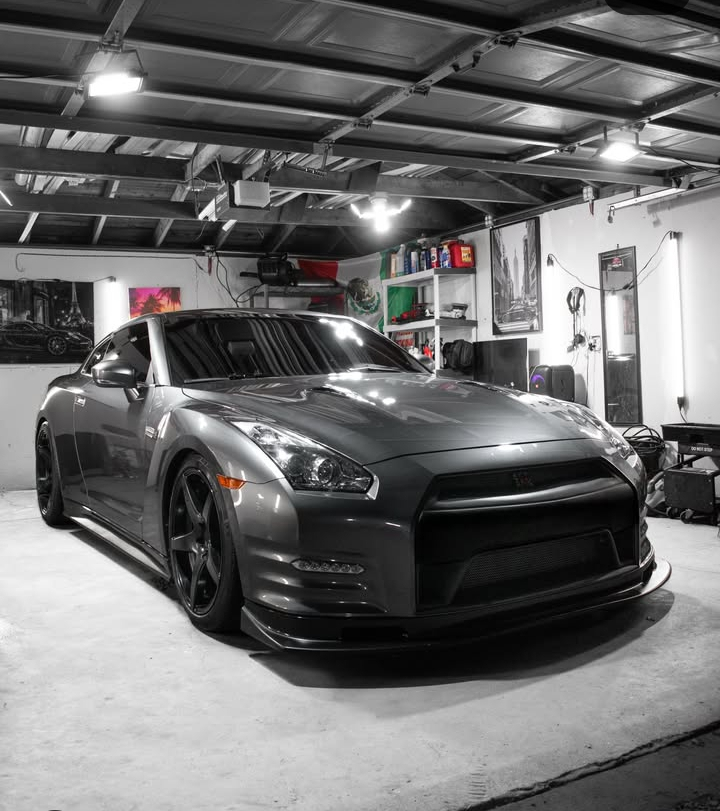
Full exterior detail — paint correction and a fresh ceramic layer to bring back the factory gray's depth.
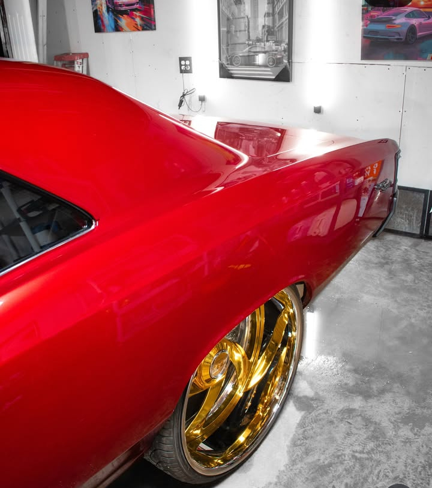
Rear corner detail — deep gloss with zero swirl marks left behind.
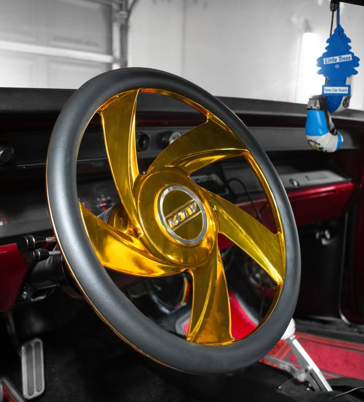
Classic interior, modern standard — dash, trim, and custom wheel detailed to match the exterior finish.
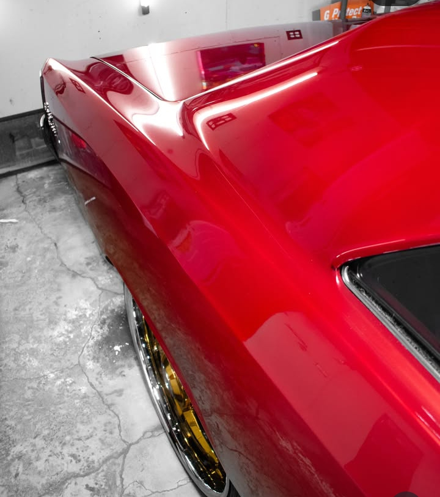
Quarter panel correction — swirl-free candy paint under the shop lights.
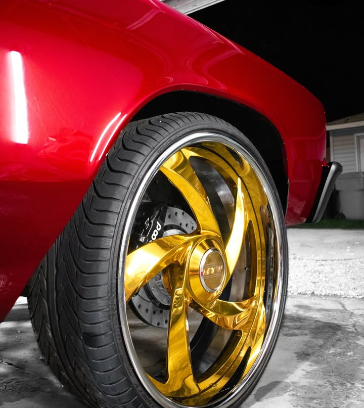
Gold billet wheel and fender, cleaned and dressed until they mirror the paint.
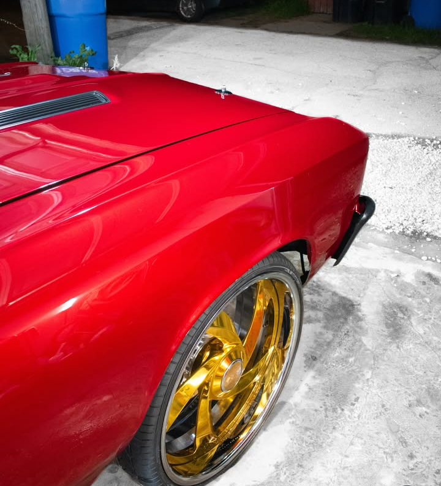
Fender and gold billet wheel, cleaned and dressed until they mirror the paint.
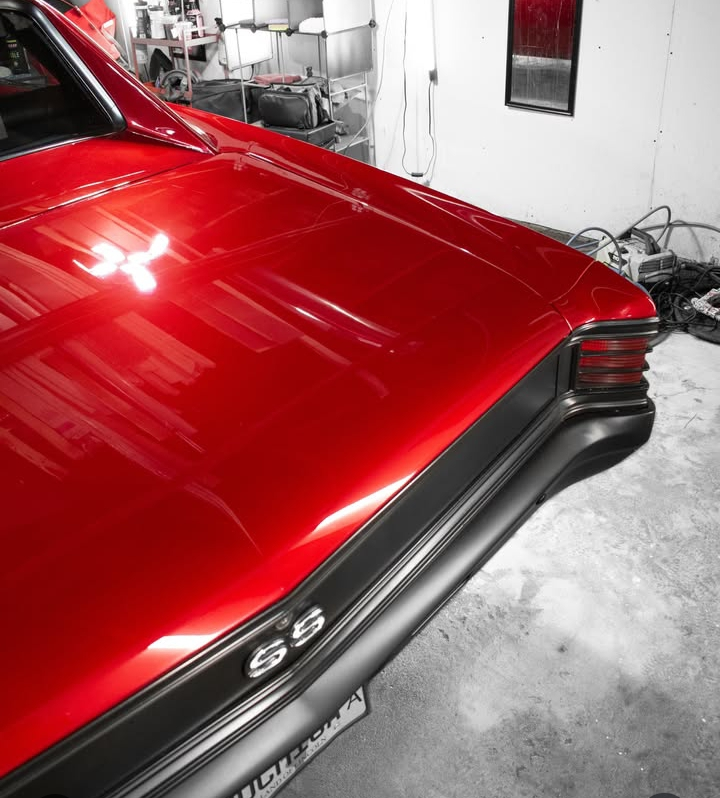
SS badge and rear deck, corrected and sealed.